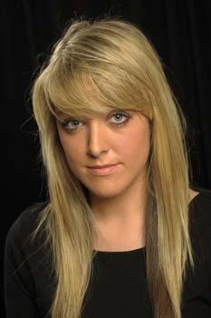
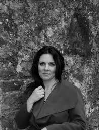

Chris Currid ~ DirectorChris Currid has been performing his whole life. Starting out in various stage schools and drama classes, he made his professional debut in Bugsy Malone in the Olympia in 2005. Since then, he has gone onto play many leading roles with different production companies and groups all over Ireland favorites being Prince Charming in Cinderella (Helix theatre, 14/15′), Pablo in Sister Act(National concert hall), Zangara in Assassins, Judas in JCS, Emmet in Legally blonde and Robbie in the Wedding Singer. In 2015, Chris was a lead vocalist in Raglan Road, Disney Orlando. He has also worked as a MC/vocalist on Irish Ferries and with Sean Gilligan Productions. In 2016, he was in the cast of the Hired Man in Cadogan Hall, London. As a teacher Chris has worked in over 30 schools and stage schools all over the country, as well as directing and musical directing school shows and musical societies. We’re delighted to welcome him back as one of our singing teachers. |
|  | Roisin Walsh ~ ChoreographerRoisin started performing at the age of 6 in the Billy Barry Stage school, where she gained her love of singing, dancing and acting. From here she moved on to The Hollywood Academy where she took part in several shows and musicals. Roisin began her professional training at Irelands 1st Musical Theatre College, Bull Alley Theatre Training Company where she trained in dance, singing and acting and all aspects of Musical Theatre. Leaving Bull Alley, Roisin has received distinctions in many subjects including grade 8 in drama, ATCL in speech and drama with Trinity Guildhall, London. Also, levels 5 and 6 in theatre performance. |
|  | Eileen Tackney ~ Musical DirectorFrom a musical family in the Co. Cavan village of Maudabawn, Eileen first followed Traditional and Classical leanings, and learned piano and accordian with county and provincial success in Fleadh Cheoil.Third level education brought her to Dublin where she studied Music in Ballyfermot Senior College, the church organ under John O’Keeffe in NUI Maynooth, and Una Russell, under whom she obtained her LTCL. Eileen’s accolades include the Dunleath Scholarship in Organ and other scholarships that led to her BA (MUS) and h Dip in Education from NUI Maynooth. Returning to Cavan in 2004, Eileen lives in the county town, where she is director of the Cathedral Choir. She has arranged Albums (including for Deirdre Shannon of Lord of the Dance fame, The Young Wolfe Tones and All-Ireland Trad’ singer Aoife Murray), directed musicals for schools (West Side Story, The Hot Mikado), and when an original composition was required for the All-Ireland Fleadh 2010 in Cavan, Eileen was commissioned. Her ‘good ear’ and sensitivity to sound are legendary. |